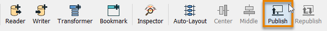
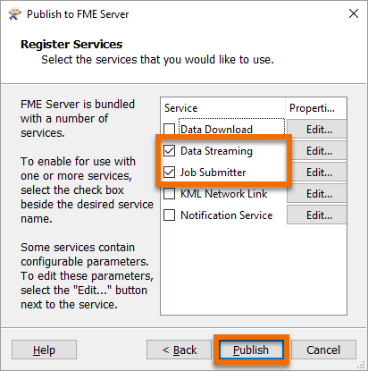
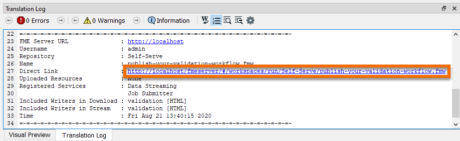
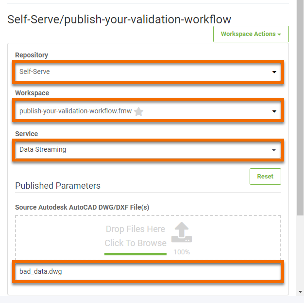

After completing this unit, you’ll be able to:
Jennifer now has to publish her workspace to FME Server so it’s available on the web. After it is published to FME Server and tested, she can turn it into an FME Server web app for use by the plan submitters to validate their data.
Jennifer clicks the Publish to FME Server button in the Workbench toolbar.

Jennifer ensures her FME Server is selected from the drop-down and clicks Next. Workspaces in FME Server are stored in repositories. To create a new repository for her workspace, Jennifer clicks New… and makes a new repository called “Self-Serve”. She clicks OK twice to finish creating this new repository.

Before she can publish, Jennifer has to select service(s) for her workspace to use. The service controls how users receive the data when they run the workspace on FME Server. These services each provide a different way to interact with the workspace:
Jennifer keeps the default Job Submitter service and checks the Data Streaming service. With this service selected, users can run the workspace and immediately see the HTML results in their browser. She clicks Publish.

Her workspace is now available in FME Server.
Jennifer accesses her workspace in a web browser using the Direct Link provided in the Translation Log: http://localhost/fmeserver/#/workspaces/run/Self-Serve/publish-your-validation-workflow.fmw.

She clicks the link to open FME Server. This link directs Jennifer to the Run Workspace page. Here she can choose which workspace to run, which service to use, and optionally provide an email to receive the results. She selects Data Streaming as the Service, and clicks-and-drags bad_data.dwg to upload it as the Source Autodesk AutoCAD DWG/DXF File(s).

She clicks Run. The workspace runs on the web and she receives the report directly in her browser. The workspace is working properly. Next, she has to make it available for submitters to run without having to log into FME Server.
Make sure you have followed along with Jennifer’s steps.